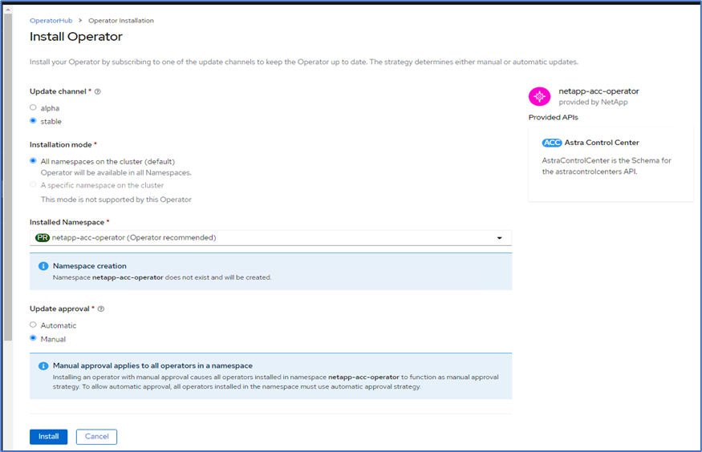
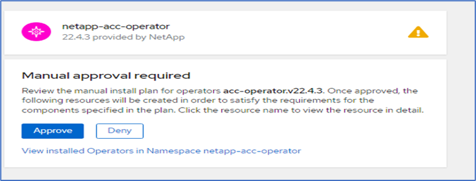
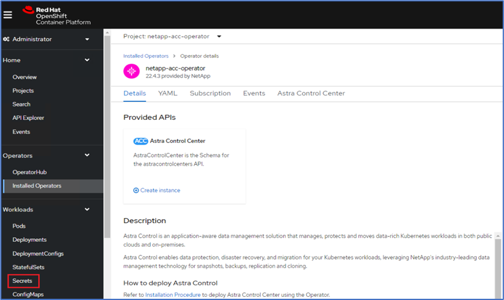
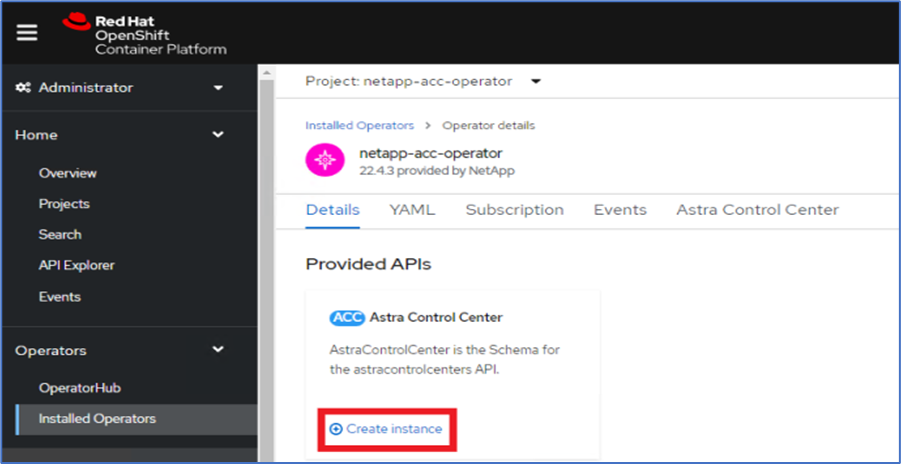
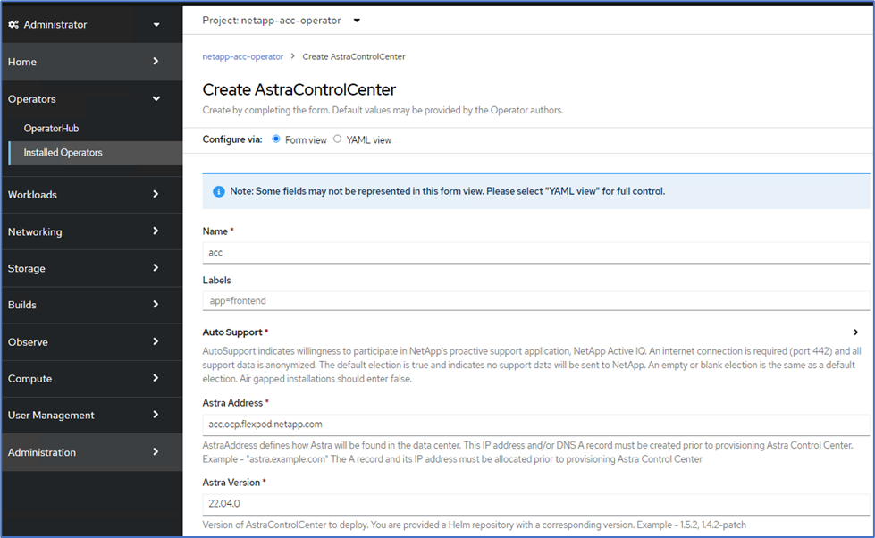
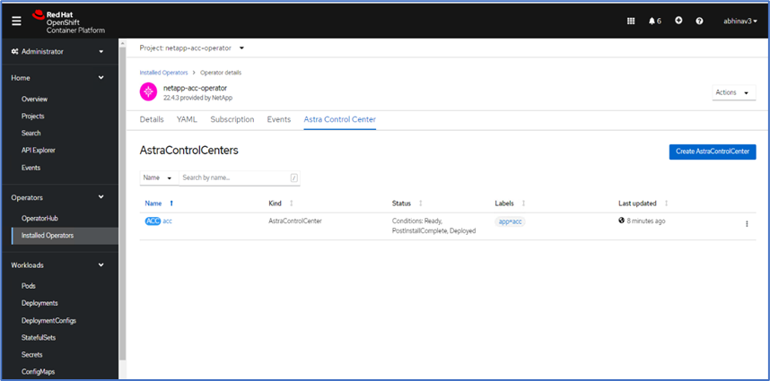
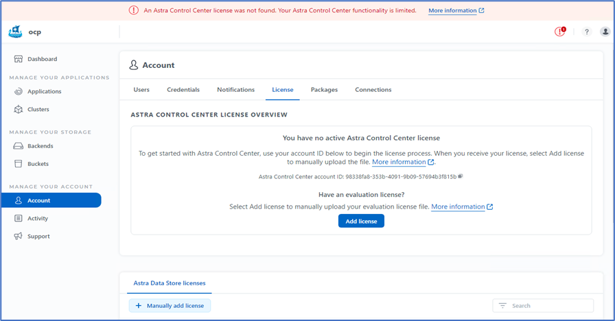

Definición de FlexPod
Definición de FlexPod
Instalación de Astra Control Center en OpenShift Container Platform
 Sugerir cambios
Sugerir cambios
Puede instalar Astra Control Center en un clúster OpenShift que se ejecuta en FlexPod o en AWS con un back-end de almacenamiento de Cloud Volumes ONTAP. En esta solución, Astra Control Center se pone en marcha en el clúster de configuración básica OpenShift.
Astra Control Center se puede instalar utilizando el proceso estándar descrito "aquí" O desde Red Hat OpenShift OperatorHub. Astra Control Operator es un operador certificado de Red Hat. En esta solución, Astra Control Center se instala mediante Red Hat OperatorHub.
Requisitos del entorno
-
Astra Control Center es compatible con varias distribuciones de Kubernetes; para Red Hat OpenShift, las versiones compatibles incluyen Red Hat OpenShift Container Platform 4.8 o 4.9.
-
Astra Control Center requiere los siguientes recursos además de los requisitos de recursos del entorno y de la aplicación del usuario final:
| Componentes | Requisito |
|---|---|
Capacidad del back-end de almacenamiento |
500 GB disponibles como mínimo |
Nodos de trabajo |
Al menos 3 nodos de trabajo, con 4 núcleos de CPU y 12 GB de RAM cada uno |
Dirección del nombre de dominio completo (FQDN) |
Una dirección FQDN para Astra Control Center |
Astra Trident |
Astra Trident 21.04 o posterior instalado y configurado |
Controlador de entrada o equilibrador de carga |
Configure el controlador de entrada para exponer Astra Control Center con una dirección URL o equilibrador de carga para proporcionar la dirección IP que se resolverá en el FQDN |
-
Debe tener un registro de imágenes privadas existente en el que pueda insertar las imágenes de creación de Astra Control Center. Debe proporcionar la dirección URL del registro de imágenes donde cargue las imágenes.

|
Algunas imágenes se van tirando mientras se ejecutan ciertos flujos de trabajo, y cuando es necesario se crean y destruyen contenedores. |
-
Astra Control Center requiere que se cree una clase de almacenamiento y se establezca como la clase de almacenamiento predeterminada. Astra Control Center es compatible con los siguientes controladores de ONTAP proporcionados por Astra Trident:
-
ontap-nas
-
ontap-nas-flexgroup
-
san ontap
-
ontap-san-economía
-
|
|
Asumimos que los clústeres OpenShift puestos en marcha tienen Astra Trident instalado y configurado con un back-end de ONTAP y también se define una clase de almacenamiento predeterminada. |
-
Para la clonación de aplicaciones en entornos OpenShift, Astra Control Center debe permitir a OpenShift montar volúmenes y cambiar la propiedad de los archivos. Para modificar la política de exportación de ONTAP y permitir estas operaciones, ejecute los siguientes comandos:
export-policy rule modify -vserver <storage virtual machine name> -policyname <policy name> -ruleindex 1 -superuser sys export-policy rule modify -vserver <storage virtual machine name> -policyname <policy name> -ruleindex 1 -anon 65534
|
|
Para añadir un segundo entorno operativo OpenShift como recurso informático gestionado, asegúrese de que la función Snapshot de Astra Trident Volume esté habilitada. Para habilitar y probar copias Snapshot de volumen con Astra Trident, consulte el funcionario "Instrucciones de Astra Trident". |
-
A. "VolumeSnapClass" Debe configurarse en todos los clústeres de Kubernetes desde el lugar donde se gestionan las aplicaciones. Esto también podría incluir el clúster K8s en el que está instalado Astra Control Center. Astra Control Center puede gestionar aplicaciones en el clúster K8s en el que se ejecuta.
Y gestión de aplicaciones
-
Licencia. para gestionar aplicaciones con Astra Control Center, necesita una licencia Astra Control Center.
-
Espacios de nombres. un espacio de nombres es la entidad más grande que puede ser administrada como una aplicación por Astra Control Center. Puede elegir filtrar componentes según las etiquetas de la aplicación y las etiquetas personalizadas de un espacio de nombres existente y gestionar un subconjunto de recursos como aplicación.
-
StorageClass. Si instala una aplicación con StorageClass definida explícitamente y necesita clonar la aplicación, el clúster de destino para la operación de clonación debe tener el StorageClass especificado originalmente. Se produce un error al clonar una aplicación con un tipo de almacenamiento establecido explícitamente en un clúster que no tenga el mismo tipo de almacenamiento.
-
Recursos Kubernetes. las aplicaciones que usan recursos Kubernetes no capturados por Astra Control podrían no tener capacidades completas de gestión de datos de aplicaciones. Astra Control puede capturar los siguientes recursos de Kubernetes:
| Recursos de Kubernetes | ||
|---|---|---|
Función de clúster |
ClusterRoleBinding |
ConfigMap |
CustomResourceDefinition |
Recurso personalizado |
Cronjob |
DemonSet |
HorizontalPodAutocaler |
Entrada |
DeploymentConfig |
MutatingWebhook |
Claim persistente |
Pod |
PodDisruptionBudget |
PodTemplate |
Política de red |
Replicaset |
Función |
RoleBinding |
Ruta |
Secreto |
ValidadoWebhook |
Instale Astra Control Center utilizando OpenShift OperatorHub
El siguiente procedimiento instala Astra Control Center utilizando Red Hat OperatorHub. En esta solución, Astra Control Center se instala en un clúster OpenShift con configuración básica que se ejecuta en FlexPod.
-
Descargue el paquete Astra Control Center (
astra-control-center-[version].tar.gz) del "Sitio de soporte de NetApp". -
Descargue el archivo .zip de los certificados y claves de Astra Control Center desde "Sitio de soporte de NetApp".
-
Verifique la firma del paquete.
openssl dgst -sha256 -verify astra-control-center[version].pub -signature <astra-control-center[version].sig astra-control-center[version].tar.gz
-
Extraiga las imágenes de Astra.
tar -vxzf astra-control-center-[version].tar.gz
-
Cambie al directorio Astra.
cd astra-control-center-[version]
-
Agregue las imágenes al registro local.
For Docker: docker login [your_registry_path]OR For Podman: podman login [your_registry_path]
-
Utilice la secuencia de comandos adecuada para cargar las imágenes, etiquetar las imágenes y empujarlas al registro local.
Para Docker:
export REGISTRY=[Docker_registry_path] for astraImageFile in $(ls images/*.tar) ; do # Load to local cache. And store the name of the loaded image trimming the 'Loaded images: ' astraImage=$(docker load --input ${astraImageFile} | sed 's/Loaded image: //') astraImage=$(echo ${astraImage} | sed 's!localhost/!!') # Tag with local image repo. docker tag ${astraImage} ${REGISTRY}/${astraImage} # Push to the local repo. docker push ${REGISTRY}/${astraImage} donePara Podman:
export REGISTRY=[Registry_path] for astraImageFile in $(ls images/*.tar) ; do # Load to local cache. And store the name of the loaded image trimming the 'Loaded images: ' astraImage=$(podman load --input ${astraImageFile} | sed 's/Loaded image(s): //') astraImage=$(echo ${astraImage} | sed 's!localhost/!!') # Tag with local image repo. podman tag ${astraImage} ${REGISTRY}/${astraImage} # Push to the local repo. podman push ${REGISTRY}/${astraImage} done -
Inicie sesión en la consola web de clúster OpenShift con configuración básica. En el menú lateral, seleccione operadores > OperatorHub. Introduzca
astrapara enumerar lanetapp-acc-operator.
netapp-acc-operatorEs un operador Red Hat OpenShift certificado y se encuentra en el catálogo de OperatorHub. -
Seleccione
netapp-acc-operatorY haga clic en instalar.
-
Seleccione las opciones adecuadas y haga clic en instalar.

-
Apruebe la instalación y espere a que se instale el operador.

-
En esta fase, el operador se instala correctamente y está listo para su uso. Haga clic en Ver operador para iniciar la instalación de Astra Control Center.

-
Antes de instalar Astra Control Center, cree el secreto de extracción para descargar imágenes Astra del registro Docker que ha introducido anteriormente.

-
Para extraer las imágenes de Astra Control Center de su Docker Private repo, cree un secreto en la
netapp-acc-operatorespacio de nombres. Este nombre secreto se proporciona en el manifiesto Astra Control Center YAML en un paso posterior.
-
En el menú lateral, seleccione operadores > operadores instalados y haga clic en Crear instancia en la sección API que se proporciona.

-
Complete el formulario Create AstraControlCenter. Proporcione el nombre, la dirección Astra y la versión Astra.

En Dirección Astra, proporcione la dirección FQDN para Astra Control Center. Esta dirección se utiliza para acceder a la consola web de Astra Control Center. El FQDN también debe resolver una red IP accesible y se debe configurar en el DNS. -
Escriba un nombre de cuenta, una dirección de correo electrónico, el apellido del administrador y conserve la política de reclamación de volumen predeterminada. Si está utilizando un equilibrador de carga, establezca el tipo de entrada en
AccTraefik. De lo contrario, seleccione Genérico paraIngress.Controller. En el Registro de imágenes, introduzca la ruta de acceso y el secreto del Registro de imágenes del contenedor.
En esta solución, se utiliza el equilibrador de carga de Metallb. Por lo tanto, el tipo de entrada es AccTraefik. De esta forma se expone la puerta de enlace Traefik de Astra Control Center como un servicio Kubernetes de tipo LoadBalancer. -
Introduzca el nombre del administrador, configure el escalado de recursos y proporcione la clase de almacenamiento. Haga clic en Crear.

El estado de la instancia de Astra Control Center debe cambiar de implementar a preparado.

-
Compruebe que todos los componentes del sistema se hayan instalado correctamente y que todos los pods estén en ejecución.
root@abhinav-ansible# oc get pods -n netapp-acc-operator NAME READY STATUS RESTARTS AGE acc-helm-repo-77745b49b5-7zg2v 1/1 Running 0 10m acc-operator-controller-manager-5c656c44c6-tqnmn 2/2 Running 0 13m activity-589c6d59f4-x2sfs 1/1 Running 0 6m4s api-token-authentication-4q5lj 1/1 Running 0 5m26s api-token-authentication-pzptd 1/1 Running 0 5m27s api-token-authentication-tbtg6 1/1 Running 0 5m27s asup-669df8d49-qps54 1/1 Running 0 5m26s authentication-5867c5f56f-dnpp2 1/1 Running 0 3m54s bucketservice-85495bc475-5zcc5 1/1 Running 0 5m55s cert-manager-67f486bbc6-txhh6 1/1 Running 0 9m5s cert-manager-cainjector-75959db744-4l5p5 1/1 Running 0 9m6s cert-manager-webhook-765556b869-g6wdf 1/1 Running 0 9m6s cloud-extension-5d595f85f-txrfl 1/1 Running 0 5m27s cloud-insights-service-674649567b-5s4wd 1/1 Running 0 5m49s composite-compute-6b58d48c69-46vhc 1/1 Running 0 6m11s composite-volume-6d447fd959-chnrt 1/1 Running 0 5m27s credentials-66668f8ddd-8qc5b 1/1 Running 0 7m20s entitlement-fd6fc5c58-wxnmh 1/1 Running 0 6m20s features-756bbb7c7c-rgcrm 1/1 Running 0 5m26s fluent-bit-ds-278pg 1/1 Running 0 3m35s fluent-bit-ds-5pqc6 1/1 Running 0 3m35s fluent-bit-ds-8l7cq 1/1 Running 0 3m35s fluent-bit-ds-9qbft 1/1 Running 0 3m35s fluent-bit-ds-nj475 1/1 Running 0 3m35s fluent-bit-ds-x9pd8 1/1 Running 0 3m35s graphql-server-698d6f4bf-kftwc 1/1 Running 0 3m20s identity-5d4f4c87c9-wjz6c 1/1 Running 0 6m27s influxdb2-0 1/1 Running 0 9m33s krakend-657d44bf54-8cb56 1/1 Running 0 3m21s license-594bbdc-rghdg 1/1 Running 0 6m28s login-ui-6c65fbbbd4-jg8wz 1/1 Running 0 3m17s loki-0 1/1 Running 0 9m30s metrics-facade-75575f69d7-hnlk6 1/1 Running 0 6m10s monitoring-operator-65dff79cfb-z78vk 2/2 Running 0 3m47s nats-0 1/1 Running 0 10m nats-1 1/1 Running 0 9m43s nats-2 1/1 Running 0 9m23s nautilus-7bb469f857-4hlc6 1/1 Running 0 6m3s nautilus-7bb469f857-vz94m 1/1 Running 0 4m42s openapi-8586db4bcd-gwwvf 1/1 Running 0 5m41s packages-6bdb949cfb-nrq8l 1/1 Running 0 6m35s polaris-consul-consul-server-0 1/1 Running 0 9m22s polaris-consul-consul-server-1 1/1 Running 0 9m22s polaris-consul-consul-server-2 1/1 Running 0 9m22s polaris-mongodb-0 2/2 Running 0 9m22s polaris-mongodb-1 2/2 Running 0 8m58s polaris-mongodb-2 2/2 Running 0 8m34s polaris-ui-5df7687dbd-trcnf 1/1 Running 0 3m18s polaris-vault-0 1/1 Running 0 9m18s polaris-vault-1 1/1 Running 0 9m18s polaris-vault-2 1/1 Running 0 9m18s public-metrics-7b96476f64-j88bw 1/1 Running 0 5m48s storage-backend-metrics-5fd6d7cd9c-vcb4j 1/1 Running 0 5m59s storage-provider-bb85ff965-m7qrq 1/1 Running 0 5m25s telegraf-ds-4zqgz 1/1 Running 0 3m36s telegraf-ds-cp9x4 1/1 Running 0 3m36s telegraf-ds-h4n59 1/1 Running 0 3m36s telegraf-ds-jnp2q 1/1 Running 0 3m36s telegraf-ds-pdz5j 1/1 Running 0 3m36s telegraf-ds-znqtp 1/1 Running 0 3m36s telegraf-rs-rt64j 1/1 Running 0 3m36s telemetry-service-7dd9c74bfc-sfkzt 1/1 Running 0 6m19s tenancy-d878b7fb6-wf8x9 1/1 Running 0 6m37s traefik-6548496576-5v2g6 1/1 Running 0 98s traefik-6548496576-g82pq 1/1 Running 0 3m8s traefik-6548496576-psn49 1/1 Running 0 38s traefik-6548496576-qrkfd 1/1 Running 0 2m53s traefik-6548496576-srs6r 1/1 Running 0 98s trident-svc-679856c67-78kbt 1/1 Running 0 5m27s vault-controller-747d664964-xmn6c 1/1 Running 0 7m37s
Cada pod debe tener el estado de ejecución. Puede tardar varios minutos en implementar los pods del sistema. -
Cuando todos los pods estén en ejecución, ejecute el siguiente comando para recuperar la contraseña una vez. En la versión YAML de la salida, compruebe la
status.deploymentStatepara el valor desplegado y, a continuación, copie elstatus.uuidvalor. La contraseña esACC-Seguido del valor UUID. (ACC-[UUID]).root@abhinav-ansible# oc get acc -o yaml -n netapp-acc-operator
-
En un explorador, desplácese hasta la URL usando el FQDN que haya proporcionado.
-
Inicie sesión utilizando el nombre de usuario predeterminado, que es la dirección de correo electrónico proporcionada durante la instalación y la contraseña única ACC-[UUID].

Si introduce una contraseña incorrecta tres veces, la cuenta de administrador estará bloqueada durante 15 minutos. -
Cambie la contraseña y continúe.

Para obtener más información acerca de la instalación de Astra Control Center, consulte "Descripción general de la instalación de Astra Control Center" página.
Configure Astra Control Center
Después de instalar Astra Control Center, inicie sesión en la interfaz de usuario, cargue la licencia, añada clústeres, gestione el almacenamiento y añada bloques.
-
En la página de inicio de cuenta, vaya a la ficha Licencia y seleccione Agregar licencia para cargar la licencia Astra.

-
Antes de agregar el clúster OpenShift, cree una clase de snapshot Astra Trident Volume desde la consola web de OpenShift. La clase de snapshot Volume se configura con la
csi.trident.netapp.iocontrolador.
-
Para añadir el clúster de Kubernetes, vaya a Clusters en la página de inicio y haga clic en Add Kubernetes Cluster. A continuación, cargue el
kubeconfigarchivo para el clúster y escriba un nombre de credencial. Haga clic en Siguiente.
-
Las clases de almacenamiento existentes se detectan de forma automática. Seleccione la clase de almacenamiento predeterminada, haga clic en Next y después en Add cluster.

-
El clúster se añade en unos minutos. Para agregar clústeres de OpenShift Container Platform adicionales, repita los pasos 1–4.
Para añadir un entorno operativo OpenShift adicional como recurso informático gestionado, asegúrese de que Astra Trident "Objetos VolumeSnapshotClass" están definidos. -
Para gestionar el almacenamiento, vaya a backends (backends), haga clic en los tres puntos de la sección Actions (acciones) en el backend que desea gestionar. Haga clic en gestionar.

-
Proporcione las credenciales de ONTAP y haga clic en Next. Revise la información y haga clic en Managed. Los back-ends deberían ser el siguiente ejemplo.

-
Para agregar un cucharón a Astra Control, seleccione cucharones y haga clic en Agregar.

-
Seleccione el tipo de bloque y proporcione el nombre de bloque, el nombre del servidor S3, la dirección IP y la credencial S3. Haga clic en Update.

En esta solución, se usan los bloques AWS S3 y ONTAP S3. También puede utilizar StorageGRID. El estado de la cuchara debe ser saludable.

Como parte del registro del clúster de Kubernetes con Astra Control Center para la gestión de datos para aplicaciones, Astra Control crea automáticamente vinculaciones de roles y un espacio de nombres de supervisión de NetApp para recopilar métricas y registros de los pods de la aplicación y los nodos de trabajo. Cree una de las clases de almacenamiento basado en ONTAP compatibles por defecto.
Usted primero "Añada un clúster a la gestión de Astra Control", Puede instalar aplicaciones en el clúster (fuera de Astra Control) y, a continuación, ir a la página aplicaciones de Astra Control para gestionar las aplicaciones y sus recursos. Para obtener más información sobre la gestión de aplicaciones con Astra, consulte "Requisitos de gestión de aplicaciones".